휴머노이드 로봇의 발전과정
55
year
1세대(1970-1080s)
2세대(1990s-2000s)
3세대(2010s)
4세대(2020s-AI전환기)
WABOT-1 (日 와세다대, 1973)
WABOT-2 (日 와세다대, 1984)
Honda P2 → ASIMO (2000)
KAIST HUBO (2005)
NASA Valkyrie (2013-)
Boston Dynamics Atlas(2013)
SoftBank Pepper (2015)
Toyota T-HR3 (2017)
Agility Digit (2023)
Apptronik Apollo (2023)
Figure 01 (2024)
Figure 02 (2024)
Boston Dynamics Atlas (2024 전동)
Tesla Optimus Gen 3 (2025)
세계 최초의 실물 크기 인간형 느린 보행·음성 대화 시도
계단 오르기·달리기·군무까지 “실내 이동” 안정화
아시아 최초 자립 보행 휴머노이드
우주·재난 환경용
최초의 대량 상용 “감성 휴머노이드” (접객·교육)
원격 조작자가 느끼는 힘을 그대로 로봇이 재현
아마존 물류 창고 시범 투입
4시간 교체식 전원·대화형 작업 지시 LLM 인터페이스
언어만으로 업무 학습
Figure 01 업그레이드 버전
전 세대보다 가볍고 더 넓은 관절 운동 범위, 완전 자율 작업
하루종일 근무 가능한 배터리, 유연함
일본어로 사람과 소통하고, 외부 수용체, 인공 귀와 눈, 그리고 인공 입을 이용하여 물체까지의 거리와 방향을 측정할 수 있었습니다. WABOT-1은 하지로 걸었고, 촉각 센서를사용하는 손으로 물체를 잡고 운반할 수 있었습니다. WABOT-1의 지능은 한 살 반 어린이 수준으 추정되었습니다.
WABOT-2는 사람과 대화하고, 눈으로 일반 악보를 읽고, 전자 오르간으로 중간 난이도의 곡을 연주할 수 있습니다. 다재다능한 로봇이 아닌 "전문 로봇"으로 정의.
두 발로 걷는 최초의 로봇인 아시모는 움직이는 여러 물체를 인식하고, 물체의 거리와 방향을 판단하고, 음성 명령과 사람의 몸짓을 해석하고, 신체에 내장된 센서를 통해 자율적으로 이동할 수 있습니다.
실물 크기의 두 발로 걷는 프레임에 장착된 세계 최초의 안드로이드 머리를 출시했습니다. 말을 할 수 있었고 다양한 자연스러운 얼굴 표정을 표현할 수 있었습니다.
아르테미스 임무의 일환으로 구축될 달의 장기 작업 현장 및 서식지와 같은 더럽고 위험한 환경에서 작업할 수 있는 로봇입니다. 원격으로 조종되는 이동 로봇은 우주인이 물리적으로 존재하지 않더라도 지구 기반 운영자들이 중요한 활동을 수행할 수 있도록 지원할 수 있습니다. 로봇을 활용하여 아르테미스 임무를 강화하면 인류는 달 표면에 장기적으로 거주할 수 있을 뿐만 아니라 언젠가는 화성과 같은 다른 행성에도 진출할 수 있습니다.
Atlas는 레이저 거리 측정기와 스테레오 카메라라는 두 개의 비전 시스템을 갖추고 있으며 둘 다 오프보드 컴퓨터로 제어되며 정밀 운동 기술 기능이 있는 손을 가지고 있습니다. 사지는 총 28개의 자유도를 가지고 있습니다. Atlas는 팔과 다리를 사용하여 험난한 지형을 탐색하고 독립적으로 올라갈 수 있지만 2013년 프로토타입 버전은 외부 전원 공급 장치에 연결되어 있었습니다
준 인간형 로봇으로 , 감정을 읽을 수 있도록 설계되었습니다. 감정 인식능력은 얼굴 표정과 음성 톤을 감지하고 분석하는 데 기반하여 방문객을 식별하고, 회의 주최자에게 알림을 보내고, 음료 준비를 할 수 있습니다. 또한, Pepper는 잠재 고객과 자율적으로 채팅할 수 있습니다. 첫 번째 1,000대가 단 60초 만에 매진되었습니다.
"마스터 핸드" 컨트롤러로 마스터 조종 시스템이 손가락 수준까지 섬세한 작업을 수행하는 방식으로 위생이 필요한 의료산업 위험요소가 있는 건설현상 및 재해지역, 우주공간등 다양한 환경에서 활용할 수 있습니다.
Digit은 다목적이므로 다양한 작업을 실행하고 다양한 워크플로에 적응할 수 있고 창고의 공간과 구석에서 물건을 새로운 방식으로 옮기고, 잡고, 다룰 수 있습니다. 크기와 모양은 인간 중심적인 건물에 적합하며, 직원들과 협업할 수 있어 비용이 많이 드는 개조 없이 기존 창고 운영 및 준공 인프라에 쉽게 배포할 수 있습니다. 배송 창고에서 흔히 볼 수 있는 플라스틱 토트를 잡고 이동하는 데 최적화된 엔드 이펙터가 특징입니다. I는 센서의 데이터를 실시간으로 처리하여 의사 결정을 내리고 작업을 효율적으로 수행할 수 있도록 합니다.
아폴로 로봇은 교체 가능한 배터리로 4시간 정도 일할 수 있으며 주로 반복적이고 낮은 숙련도가 필요한 일을 담당할 목적으로 개발됐습니다. 친근한 상호작용, 대량 생산 가능성, 높은 탑재량, 그리고 안전성을 고려하여 설계된 최초의 상업용 휴머노이드 로봇입니다. 단기적으로 창고와 제조 공장에서 운용될 예정이며, 궁극적으로 건설, 석유 및 가스, 전자 제품 생산, 소매, 택배, 노인 요양 등 다양한 분야로 확장될 예정입니다. 양팔을 이용해 최대 25kg의 물체를 들어 올릴 수 있습니다.
오픈AI와 휴머노이드 로봇 스타트업 피규어가 협업해 만든 ChatGPT 탑재 로봇으로 AI를 우선 설계 중심에 두고 하드웨어를 맞춰 개발하는 AI-First접근으로 만들어졌습니다. 특정 산업 전용이 아닌, 인간이 수행하는 단순 반복 노동 전반을 대체 가능하도록 설계하였고 LLM 기반 인지 + 행동 이유 설명 능력을 선보였습니다. 약 5시간 배터리 교체형 모듈로 설계되었고 20kg의 물건을 들 수 있습니다.
전 모델모다 슬림한 디자인, 관절 유연성 강화하였고 단일 GPU에서 2xGPU + Omniverse/Isaac Sim 기반 학습으로 대폭 향상되어 3배 이상 추론 속도를 보여줍니다. RGB/음성 센서와 언어 모델은 실시간 상황 감지 및 언어 대응 가능합니다. 5손가락, 16 자유도 손 설계로 복잡한 물체 조작 가능하여 더 자연스럽고 유연한 보행을 보여줍니다. BMW Spartanburg 공장에서 생산라인, 금속 부품 작업 실험 수행하여 “400% 속도 향상 + 하루 1000개 부품 조작” 성과도 보고되었습니다.
AI 기반 자율 제어 강화학습(RL) + MPC 제어를 통해, 비정형 환경에서도 자립 동작 생성 및 적응하고 공장 환경 모의 속에서 엔진 커버 분류/운반 시 마찰·장애물 감지하여 동작 수정까지 직접 수행하였습니다. 드라이브트레인 효율이 이전 60-70%에서 85-90%로 향상 되었고 실내 물류·제조·산업 환경에서 현재 상용화 가능 단계 도달한 최초의 휴머노이드 로봇입니다. 전작에서는 유압을 사용하였지만 대신 전기 모터를 사용해 소음 감소, 정밀 움직임을 강화하였습니다. Hyundai 자동차 공정에서 테스트하고 있습니다.
양손에 22개의 관절 자유도(DoF)가 탑재되어 있어, 테크 업체 평가에서도 “인간 손과 견줄 수준의 정밀한 조작”으로 인식 딥러닝 기반 보행 + 다관절 조정으로 걷기, 균형 유지, 미끄러운 바닥 대응이 매끄러워졌습니다. 2.3kWh 배터리 팩 장착, 유휴 시 100W, 활보 시 500W 수준의 효율적인 전력 소비로 일상 작업 기준 1일 가동 가능 설계 오버더에어(OTA) 업데이트 지원하여Tesla 차처럼 기능·성능 개선이 지속됩니다 Tesla 차량용 FSD(Full Self-Driving) 기반칩 탑재, 비전 AI, 센서 인식, 모션 제어를 End-to-End 신경망으로 수행해 차량과 동일한 AI 아키텍처를 적용해 자연스럽게 주변 맥락을 인식하고 대응할 수 있습니다
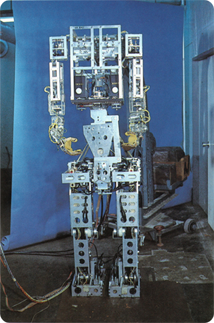 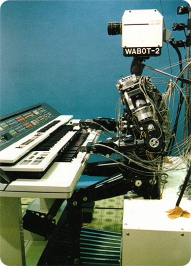 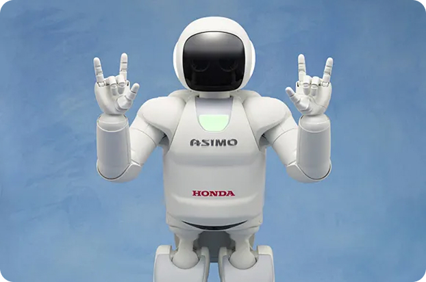 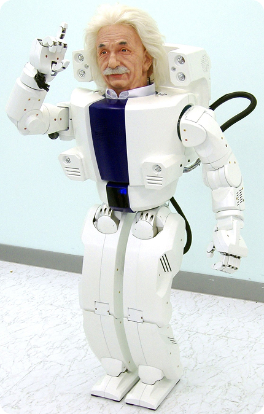 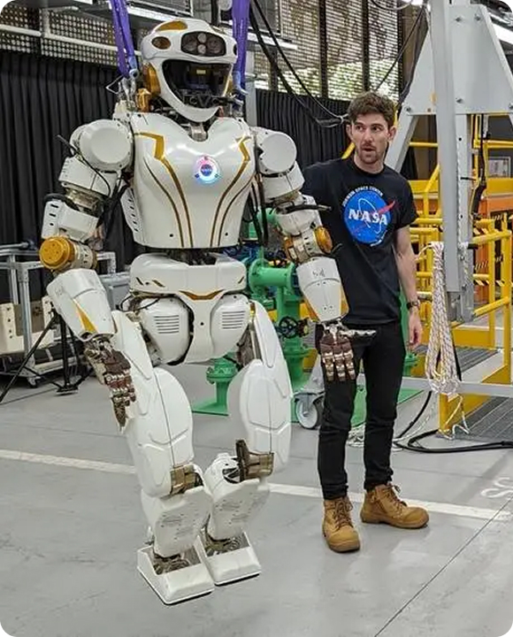 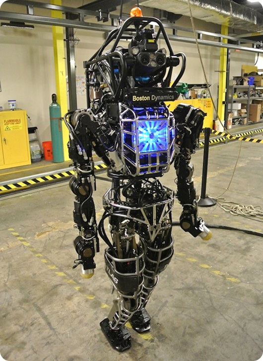 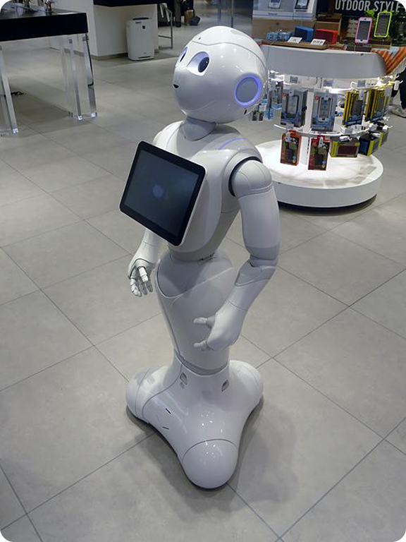 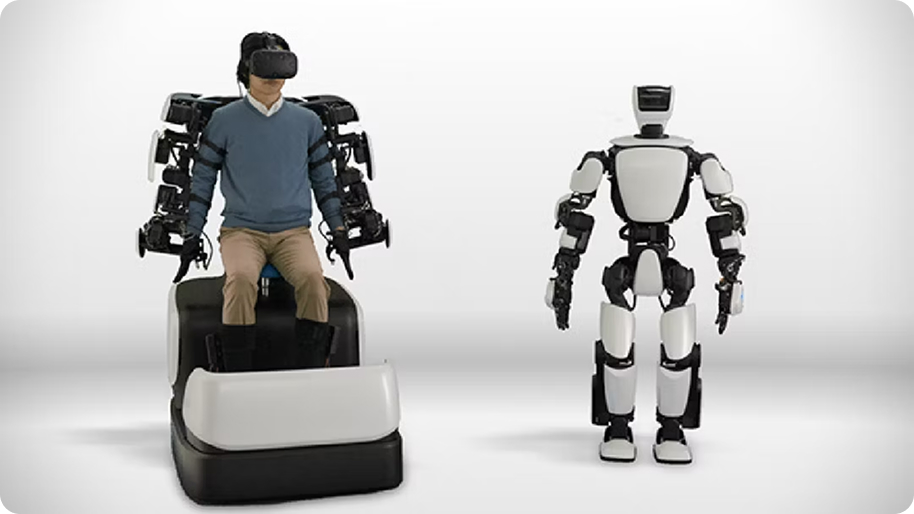 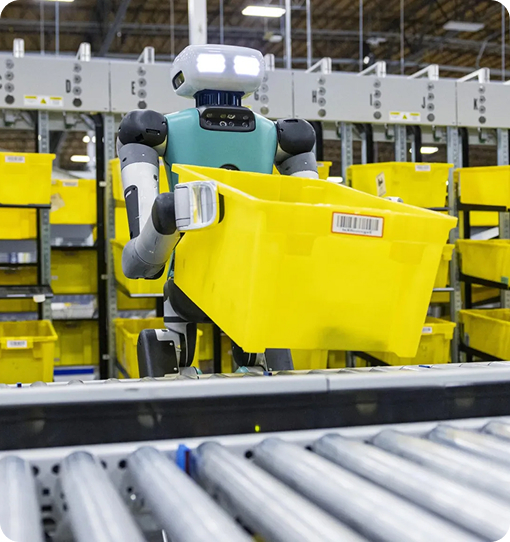 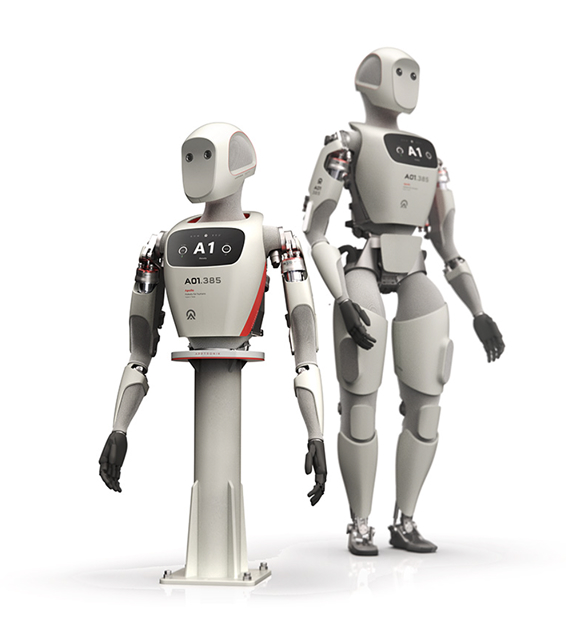 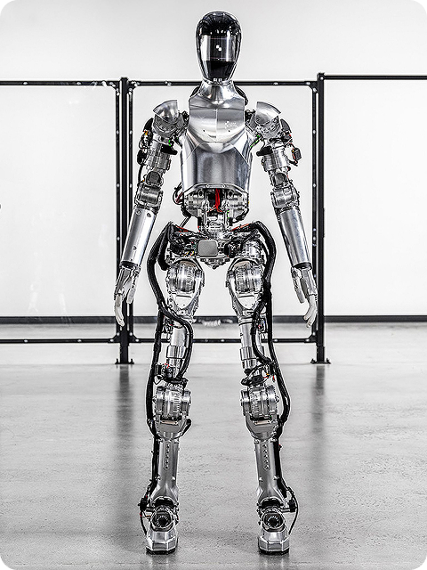 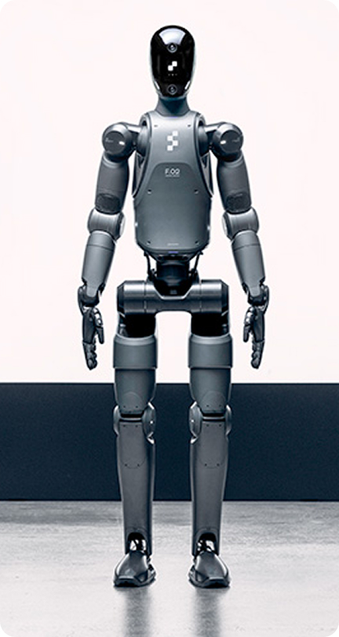 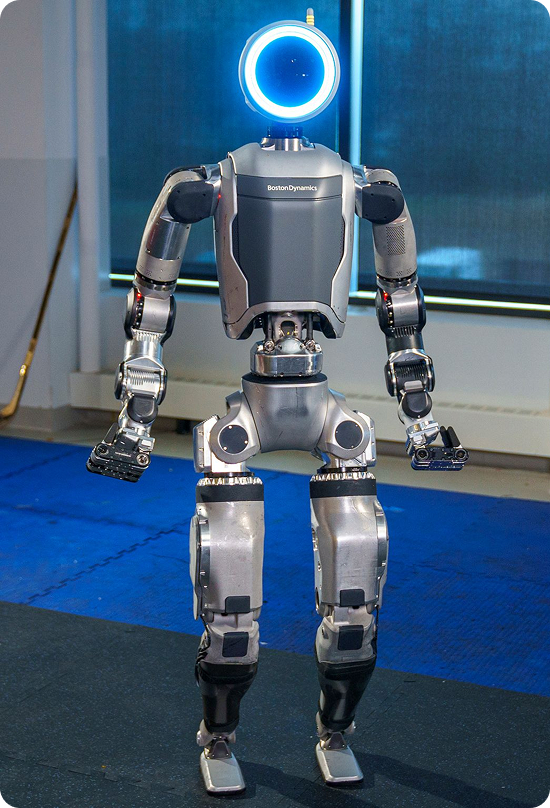 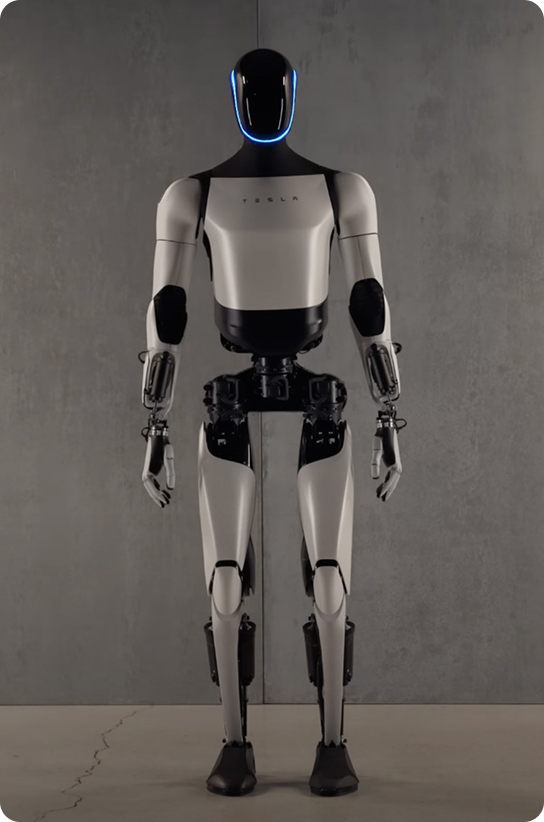